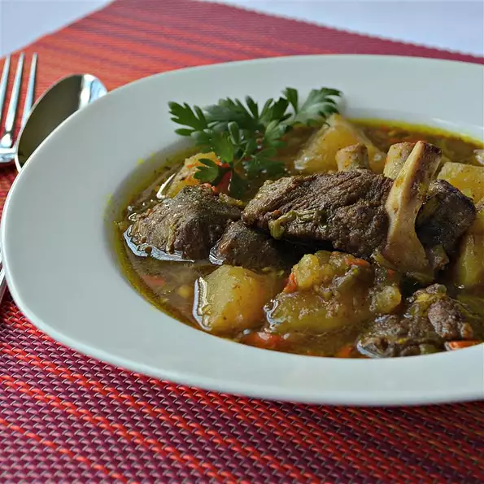
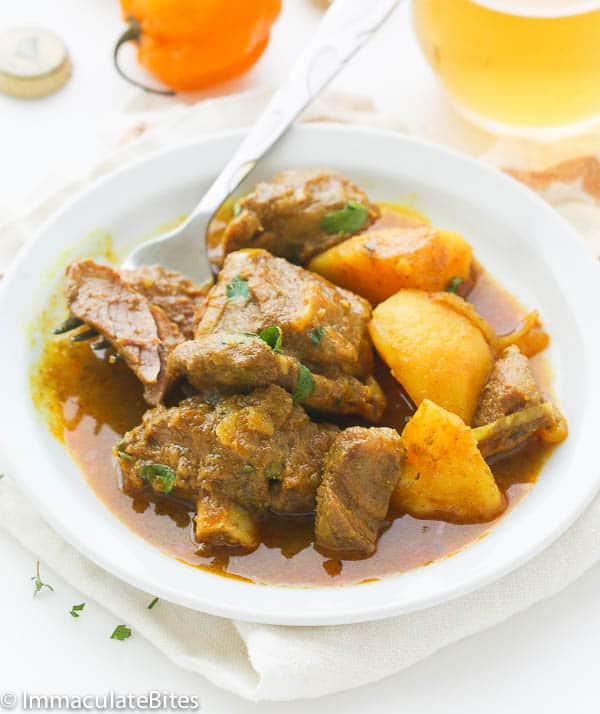

Jamaican Curried Goat

Description
Jamaican Curry Goat – insanely delicious slow-cooked Jamaican Spiced Curry
that is full of flavor and tender to the bone!
An absolutely must-make Jamaican food! So easy to make with minimal prep.

Copied from ImmaculateBites Website
Ingredients
- 2 pounds goat stew meat, cut into 1-inch cubes
- 2 fresh hot chile peppers, seeded and chopped
- 2 tablespoons curry powder
- 2 cloves garlic, minced
- 1 teaspoon salt
- 1 teaspoon ground black pepper
- 3 tablespoons vegetable oil
- 1 onion, chopped
- 1 rib celery, chopped
- 2 ½ cups vegetable broth
- 1 bay leaf
- 3 potatoes, peeled and cut into 1-inch chunks, or more as desired
Steps
- Combine goat meat, chile pepper, curry powder, garlic, salt, and black pepper in a bowl.
Cover and refrigerate to allow flavors to blend, 1 hour to overnight.
- Remove goat meat mixture from bowl and pat dry, reserving marinade.
Heat vegetable oil in a stockpot over medium-high heat. Cook meat in batches, browning on all sides, 5 to 6 minutes per batch.
Transfer meat to a plate. Add onion and celery to the stockpot; cook and stir until onion begins to brown, 4 to 6 minutes.
- Stir browned goat meat into onion mixture. Add reserved marinade, vegetable broth, and bay leaf.
Bring to a boil, cover, reduce heat to low, and simmer for 1 hour.
Stir in potatoes; simmer until potatoes and meat are tender, 35 to 45 minutes more.
- Remove stockpot from heat, skim off surface fat, and remove bay leaf.